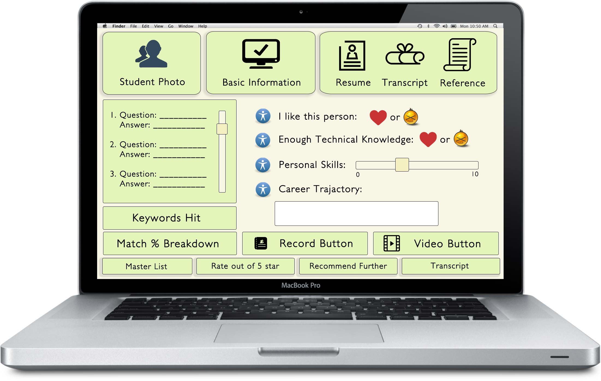

Easily flip through all event atendees and see pertinent information!
Provide interviewers the tools to review applicant information and create immediate feedback.
With the multitude of networking platforms out, it is impossible for recruiters to know where to find all the data on prospective hires. In light of the expenses and great importance of first class recruiting, LinkUpWith.Me will act as a user-friendly bridge between students and their future employers. The application creates searchable decks of "event cards" for students curated based on their interests and "applicant decks" for companies of students who express interest in that company's events. With a click of a button students can RSVP for events, send resumes, transcripts, and advertise their skills while businesses will be able to connect with students easily and expand their recruitment pool.
Recruiters can create individual “supplements” to gain company specific information regarding applicants on top of receiving applicants general profile data (such as resumes or transcripts). They can coordinate recruiting from around the world through the app itself, and through standardized forms, can have benchmarks in comparing students. Just as we can connect students with individual companies, we can do the opposite by connecting the company in question with their ideal candidates by pre-filtering candidates using each company's’ desired criteria leveraged with our database and algorithms. In addition to pre-filtering, we will have dynamic pages where recruiters can evaluate students face to face, and can manage large events through our interface.
Experience and form factor is incredibly important, and we will be very flexible in design choices, with the ability to provide specific interfaces for each individual student and company, giving them maximal utility for minimal investment. By providing cost effective services, recruiters can focus more of their effort on face to face interaction, instead of having to deal with technical hurdles. Our partnerships with recruiters will create one of the first ever comprehensive databases for “target” employers for students based on statistics such as GPA, Major, and University Affiliation.
Recruiters can become in total control, and can work with us to cheaply get the word out for their event. Instead of having to be restricted to the borders of a school and relying on word of mouth introductions, LinkUpWith.Me will act as a middleman to give maximum exposure to our recruiters.